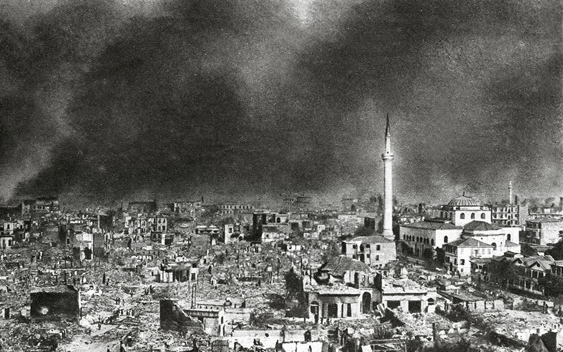

The Great Fire of 1917
By: Chris Wang

In the 19th to 20th century, Thessaloniki was a bustling port city, diverse with a multitude of ethnicities. The city was inhabited by Greeks, Jews, and Muslims, and acted as a crossroads for trade and travel throughout the Mediterranean. Until only a few decades before the fire, the city was still enclosed within its city walls from its Byzantine era. Neighborhoods were decided by ethnicity, race, and religion. The city was crowded, structurally and socially. There weren’t enough designated social gathering spots, and housing was lackluster. Bad sanitation practices ran rampant throughout the city, and people struggled to find housing.
“When you enter the town, you are amazed to see nothing but narrow, crooked lanes, badly built houses and not one square, not one paved crossroads.” – 1878 traveler
The fire is commonly believed to have started from a single tiny spark from cooking food. This spark ignited on some nearby hay bales, which strengthened the fire, allowing it to light up the nearby wooden homes. The fire started along the Ayiou Dimitriou street, and was caught in the Verdardis, or strong a northwesterly wind, exacerbating the fire and allowing it to travel throughout the city. Water was next to impossible to transport through the city, due to the narrow maze-like streets and a lot of Thessalonikis water supply being used by the Entente forces. These all combined made the fire a nightmare for the city. The fire devastated the city, leaving 70,000 people homeless and without jobs, and completely destroying the historical center. And the majority of these people impacted happened to be jewish. Most of the important cultural and religious institutions were destroyed, although no lives were lost.
"On the next day, August 6, the feast of Our Saviour, Thessaloniki made history, yet again. There where once the labyrinthine alleys of the Jewish district had spread out, were now only stones and smouldering ashes. In the other quarter, where the grand shops and hotels tower, tragic ruins reminded one of their former glory. And all these sad remains of a rich big city were swathed in heavy clouds of smoke. Deep in their basements the embers glowed for several months after the fire and, as we discovered later, so great was the force of the fire that all the glassware melted and amidst the debris of the pastry shops one could make out the jars of sweets transformed into a mass of burnt sugar and glass. The tremendous expanse covered by this catastrophe took the name of the Kammena (burnt areas). The whole district had been transmuted into a new Pompeii, where by day teams of excavators labored and by night the bums, criminals and lovers found refuge"- poet Yiorgos Vafopoulos
With the “oriental” aspect of the city mostly destroyed, the government decided to restructure the city layout, and modernize the historical city. One of the reasons why the fire was so devastating was the poor city layout. Homes were crammed side by side, separated by measly alleyways, and everything was also flammable. The prime minister wouldn’t begin reconstruction efforts until a solid, new, city layout was designed.
So, Restructuring planning was handed to french urban planner Ernest Herbrard. Ernest Herbrard, born in 1875 and died in 1933, was a french urban planner known for his works primarily in Thessaloniki, but also in Indochina. In the case of rebuilding the city, he worked alongside Greek architects Aristotelis Zachos and Konstantinos Kitsikis, as well as British Thomas Hayton Mawson and French Joseph Pleyber.
The plan was basically to organize the city better, straying from the “maze-like” layout and creating a layout made up with blocks. He wanted a very geometric design, taking inspiration from the French school of Architecture.
plan was implemented, including Aristotle Square, one of the main focal points in current-day Thessaloniki. A lot of Herbrards ideas were implemented simply because of how grandiose they were, and the city couldn’t afford it. This new and improved layout was important for future city development, with expansion a key factor Herbrard had in mind when designing the city.
His plan also includes many parks scattered throughout the city, highlighted surviving national monuments, and implemented many new technologies.
Some of these newer technologies include concrete, a non flammable construction material, and the idea of apartment buildings.
These apartment buildings would be crucial for a city growing population wise.
Following the fire, the city was united, past ethnicity differences and religious differences, through suffering.
This fire and reconstruction was quite a pivotal moment for Thessaloniki’s history. By rebuilding quite an outdated city layout, the city modernized, preparing for the future. The minarets from the mosques weren’t rebuilt after the fire, which symbolized a newly modernized Thessaloniki breaking away from the chains and oppression of the Ottoman Empire
In less than a decade, the Asia Minor incident resulted in hundreds of thousands of immigrants entering the newly reconstructed city, marking time of repopulation and growth for Thessaloniki. This caused a massive demand for housing throughout the city. Although Herbrard envisioned the city expanding its borders, revisions were made to house all the new refugees.
With the Jewish population mainly directed by the fire, with thousands of them being displaced from it, as well as an influx of Greeks, Turks, and Armenian refugees shifted the demographic makeup of the city, one which remained constant for centuries. This, along with a country-wide nationalistic pride, reflects a change of national identity for Thessaloniki and Greece.
The soldiers gazed in awe at the glow and smoke . . .
were sent on trucks to give what help they could.
'All hands to the pumps!' But the fire brigade had none
that worked. Bill did what he could. He helped a bloke
load onto a cart his few pathetic goods.
In the photograph, Bill having a fag. Job done!
Bill, Richard Devereux
Devereux, Richard. Bill. Choir Press, 2016. Accessed 2 December 2024.
Georgiou, Efthymios. “Thessaloniki at the edge of the 19th and 20th centuries: A look back at the history of a multinational city.” The Metropole, 26 March 2020, https://themetropole.blog/2020/03/26/thessaloniki-at-the-edge-of-the-19th-and-20th-centuries-a-look-back-at-the-history-of-a-multinational-city/. Accessed 2 December 2024.
harvard.edu. “Fire and Modernization - Salonica.” Mapping Cultural Space Across Eurasia, harvard.edu, 2010, https://eurasia.omeka.fas.harvard.edu/exhibits/show/salonika/fire-and-modernization.
Hellenic Macedonia. “The Fire of Thessaloniki on 1917.” Macedonian Heritage, 2003, https://www.macedonian-heritage.gr/HellenicMacedonia/en/C3.1.3.html.
Thessaloniki Arts & Culture. “Ernest Hebrard, the man who designed the most beautiful city in SE Europe, Thessaloniki.” thessaloniki arts and culture, 2014, https://www-thessalonikiartsandculture-gr.translate.goog/thessaloniki/thessaloniki-my-home/ernest-hebrard-o-anthropos-poy-schediase-tin-oraioteri-poli-tis-na-eyropis-ti-thessaloniki/?_x_tr_sl=el&_x_tr_tl=en&_x_tr_hl=en&_x_tr_pto=sc#google_vignette.
Yerolymbos, Alexandra. “From Ashes to Rebirth: The Great Fire of Thessaloniki.” Greece Is, https://www.greece-is.com/from-ashes-to-rebirth-the-great-fire-of-thessaloniki/.